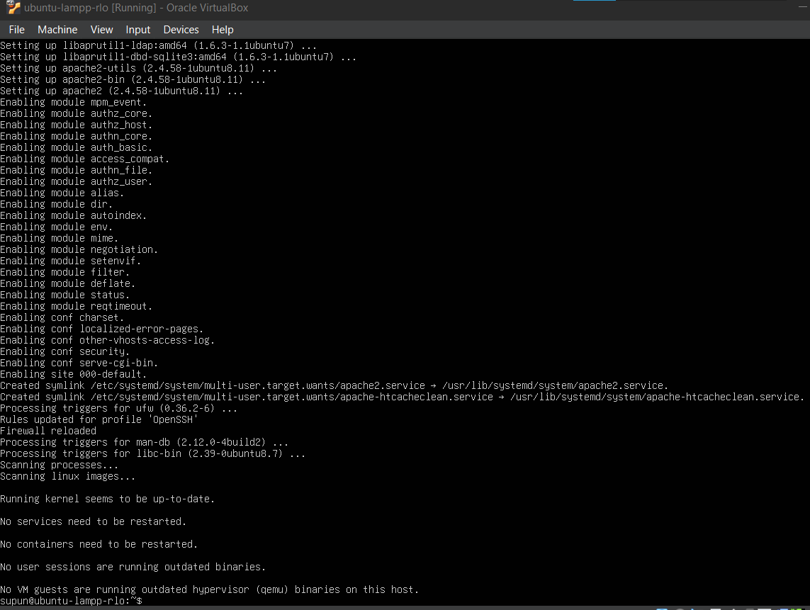
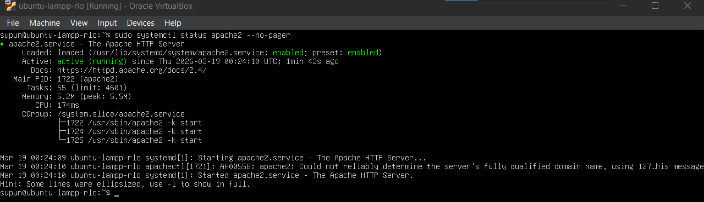
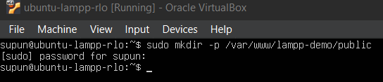
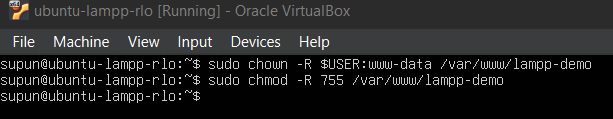
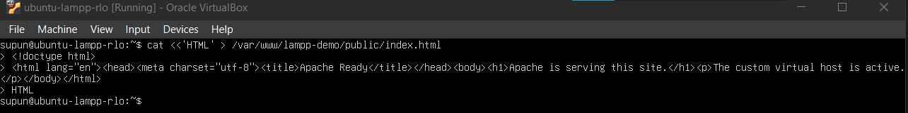

Module 3: Install Apache and Configure a Virtual Host
Install Apache2, create a dedicated site directory, configure a virtual host, and publish a placeholder page.
Your checklist progress is stored in your browser only on this device.
What you will complete
- Install Apache2 successfully.
- Understand the
sites-availableandsites-enabledworkflow. - Serve a page from a custom document root.
Steps
Install Apache2
Apache is the web server layer for the rest of the stack. Install it first, then confirm you understand where Ubuntu stores the core Apache configuration files.
1. Install the package
- Run
sudo apt install apache2 -y.Install Apache2sudo apt install apache2 -y
Apache install: During installation, Ubuntu configures the Apache packages, enables the default modules, and registers the apache2.serviceunit. - Wait for the installation to finish completely.
- Watch for package errors before moving to configuration.
2. Verify the service
- Check that Apache started by reviewing its status with
systemctl.Check the Apache servicesudo systemctl status apache2 --no-pager
Apache status: Confirm that apache2.serviceshows active (running). A hostname warning can appear here before you define a site-specificServerName, and that is acceptable at this stage. - Confirm the service is marked active (running).
- If it is not running, resolve that problem before creating a site configuration.
3. Note the configuration layout
- Remember that Ubuntu stores Apache under
/etc/apache2/. - The file templates for sites live in
/etc/apache2/sites-available/. - The enabled sites are represented by links in
/etc/apache2/sites-enabled/. - This separation is important because you will create a new site file in the next step and then explicitly enable it.
Create the document root and placeholder page
Use a dedicated directory for the demo site instead of mixing your files with the default Apache page. This keeps the project tidy and makes the virtual host configuration more explicit.
1. Build the site directory structure
- Create
/var/www/lampp-demo/publicas the document root for public web content.Create the site directorysudo mkdir -p /var/www/lampp-demo/public
Document root created: If the directory command succeeds, it usually returns to the prompt without additional output. - The
publicsubdirectory will hold the files Apache should actually serve to browsers.
2. Set ownership and permissions
- Set ownership so your user can manage the files and the web server group can read them.
Set directory ownership to your user and the web group
sudo chown -R $USER:www-data /var/www/lampp-demo - Apply safe directory permissions such as
755so Apache can traverse the directory tree.Apply safe directory permissionssudo chmod -R 755 /var/www/lampp-demo
Ownership and permissions: These commands set the site directory ownership to your user and www-data, then apply the755permissions needed for Apache to read the files. - Avoid world-writable permissions. They are not needed for this build.
3. Publish a simple placeholder page
- Create a basic
index.htmlfile inside/var/www/lampp-demo/public.Create a placeholder index pagecat <<'HTML' > /var/www/lampp-demo/public/index.html <!doctype html> <html lang="en"><head><meta charset="utf-8"><title>Apache Ready</title></head><body><h1>Apache is serving this site.</h1><p>The custom virtual host is active.</p></body></html> HTML
Placeholder page written: Finish the heredoc by entering the closing HTMLmarker on its own line, then the command will return to the prompt. - Include a short heading and a sentence showing that the custom site directory is being served.
- This gives you a simple browser test before PHP is introduced in the next modules.
Create and enable a virtual host
The virtual host tells Apache which directory to serve and which logging files to use. Configure it cleanly so your demo site becomes the default site for port 80.
1. Create the site configuration file
- Copy the default site file to a new file named
lampp-demo.conf.Copy the default virtual host as a new site configsudo cp /etc/apache2/sites-available/000-default.conf /etc/apache2/sites-available/lampp-demo.conf - Edit the new file instead of changing
000-default.confdirectly.Edit the site configsudo nano /etc/apache2/sites-available/lampp-demo.conf - Set
DocumentRootto/var/www/lampp-demo/public. - Add a matching
<Directory>block so Apache is allowed to serve content from that path.Config snippet to put inside lampp-demo.conf<VirtualHost *:80> ServerAdmin webmaster@localhost ServerName localhost DocumentRoot /var/www/lampp-demo/public ErrorLog ${APACHE_LOG_DIR}/lampp-demo-error.log CustomLog ${APACHE_LOG_DIR}/lampp-demo-access.log combined <Directory /var/www/lampp-demo/public> Options FollowSymLinks AllowOverride All Require all granted </Directory> </VirtualHost>
2. Enable the correct site
- Run
a2ensitefor the newlampp-demosite.Enable the new sitesudo a2ensite lampp-demo - Disable
000-defaultwitha2dissiteso your custom site becomes the active default on port 80.Disable the default sitesudo a2dissite 000-default - This prevents confusion when you later browse to the VM and expect your own page instead of the Apache default page.
3. Validate and reload Apache
- Run
sudo apache2ctl configtest.Validate Apache configurationsudo apache2ctl configtest - Do not restart Apache unless the result is
Syntax OK. - Restart Apache after the test passes so the new site configuration takes effect.
Restart Apache
sudo systemctl restart apache2.service
Open HTTP access in the firewall
Once Apache is serving the correct document root, allow inbound web traffic through UFW so the site can be reached from a browser.
1. Add the Apache firewall rule
- Use the Apache application profile provided by UFW rather than creating manual port rules.
- Allow
Apache Fullso both standard web ports are available if needed later.Allow Apache through UFWsudo ufw allow 'Apache Full'
2. Confirm the firewall result
- Review
sudo ufw status verboseto make sure the Apache rule appears. - Keep the existing OpenSSH rule in place.
3. Test from a browser
- Open a browser on the host machine.
- Go to
http://VM-IP/using the IP address collected earlier. - Confirm the placeholder page loads from your custom virtual host.
Troubleshooting
| Issue | What to check |
|---|---|
| Apache fails to restart after enabling the site | Run sudo apache2ctl configtest and fix syntax or path errors first. |
| 403 Forbidden | Check the DocumentRoot path, ownership, and the Require all granted directive in the virtual host. |
| Default page still appears | Confirm 000-default was disabled and the Apache service was restarted. |
Evidence to capture
- A screenshot or terminal capture showing Apache installed and running.
- A screenshot of the custom document root or placeholder
index.htmlinside/var/www/lampp-demo/public. - A screenshot of
/etc/apache2/sites-available/lampp-demo.confshowing the customDocumentRoot. - A screenshot of
sudo apache2ctl configtestreturningSyntax OK. - A screenshot of the browser loading the placeholder page from
http://VM-IP/.